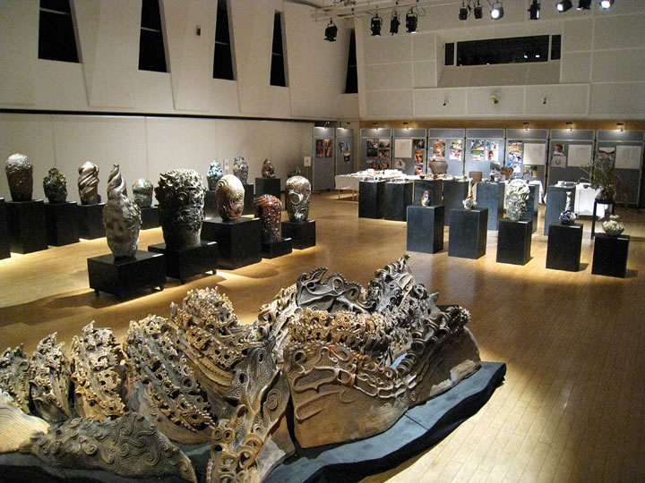
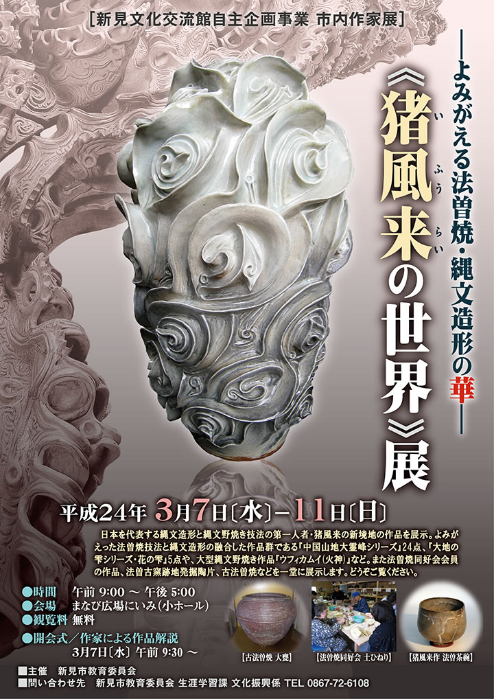

|  |
日本を代表する縄文造形と縄文野焼き技法の第一人者・猪風来の新境地の作品を展示。
よみがえった法曽焼技法と縄文造形の融合した作品群である『中国山地大霊峰シリーズ』24点、
『大地の雫シリーズ・花の雫』5点や、大型縄文野焼き作品『ウフィカムイ(火神)』など。
また法曽焼同好会会員の作品、法曽古窯跡地発掘陶片、古法曽焼などが一堂に展示されました。
=∴=∵=∴=∵=∴=∵=∴=∵=∴=∵=∴=∵=∴=∵=∴=∵=∴=∵=∴=∵=∴=∵=∴=∵=∴=∵=∴=
◆法曽焼抹茶茶碗
古法曽焼には、地元の陶土を焼成した大水甕のような焼締陶と、地元の磁器土を使用し釉薬を施した茶器や
大皿があります。
法曽焼の復元・復活研究の中から生まれたのがこの法曽焼抹茶茶碗です。
◆大地の雫シリーズ・花の雫
滑らかな白い地肌に優美な縄文スパイラル文様が浮き出しており、青白の釉が華やかであり、且つ
〈わび・さび〉にも通ずる逸品に仕上がっています。
◆中国山地大霊峰(だいれいほう)シリーズ
猪風来は、備後の福山市に生まれ、現在は新見市法曽の猪風来美術館を拠点に旺盛な創作活動を展開しています。
この自らの生命を抱き育んでくれた中国山地をテーマとして、法曽焼技法と縄文造形を合体・爆発させ、
新境地を開きました。
山々から湧き出る霊気をとらえ縄文文様を施した造形美に、炎の洗礼を受けてへんげする色彩が加わり、
生命の豊饒の根源力を感じさせます。
霊峰大山や新見五山を含む24点の山々です。
◆ウフィカムィ（火神）
猪風来の縄文野焼き作品の代表作のひとつ。
アイヌ民族は、火の神の中でも、とくに渦巻く炎のことをウフィカムィと言います。
見る角度によって宇宙や地球のマグマなど多様な連想をさせてくれるスケールの大きな作品です。
=∴=∵=∴=∵=∴=∵=∴=∵=∴=∵=∴=∵=∴=∵=∴=∵=∴=∵=∴=∵=∴=∵=∴=∵=∴=∵=∴=
〈その他の出品作品〉
●近隣に伝わる古法曽焼の器
●古法曽焼陶磁器片
●法曽焼同好会会員作品
|  |
| 【《猪風来の世界》展 ［新見文化交流館自主企画事業 市内作家展］チラシ】 →PDF版を開く |